Week 5 | Electronics Production | Feb 14
Fab Academy 2018 | Archive
Milling the PCB Board
We have Ronald milling machine at Fablab MXD milling machine at FABLAB CEPT. The board which we mill is FR1 PCB Board.
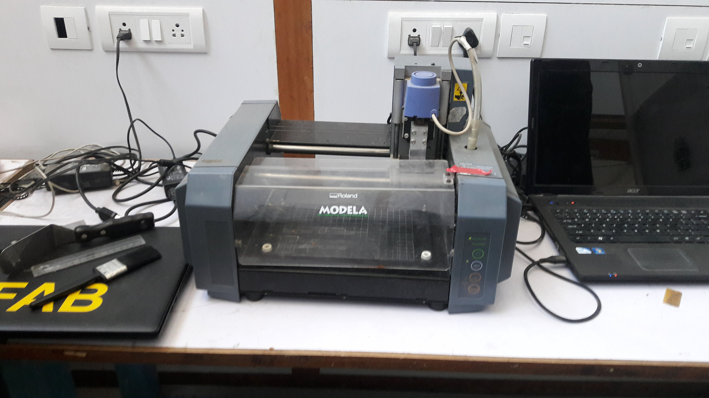
We downloaded the png of pcb from Brian's website


The board we use for milling is FR1 PCB Board. We stick the board on machine bed by double sided tape.

Here we use two drilling bits : 1/64 for milling out the traces and 1/16 for cutting the board.
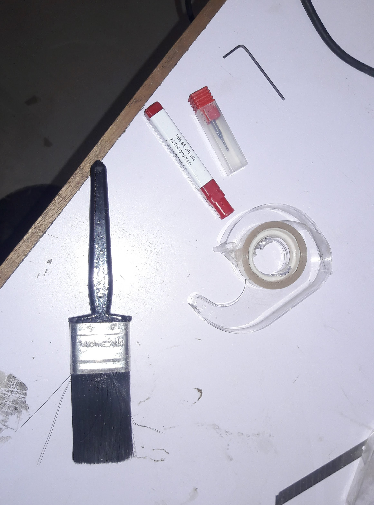
First we tried makeing the traces so we used 1/64 drill bit. The laptop connected has Ubunto Linux which hosts fab modules to generate tool-path for milling machine. Open the terminal and write "fab". Now change the "from input format" to "image(.png), and "to output process" to "Roland MDX-20 mill (.rml)" and then clicking on "make_png_rml" opens a new window

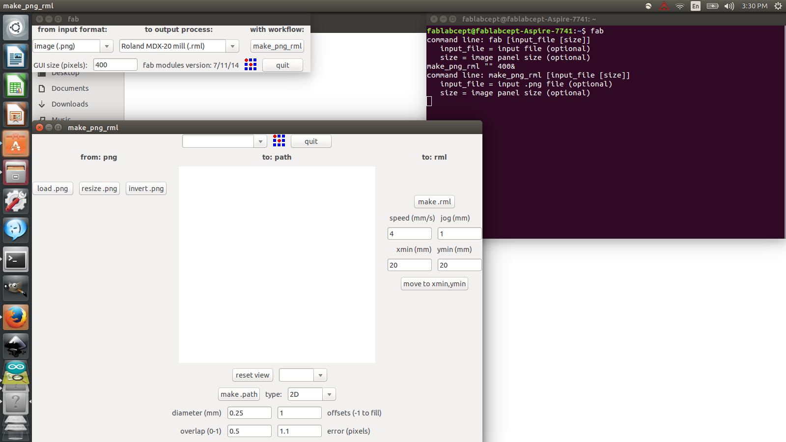
We milled the board given below:

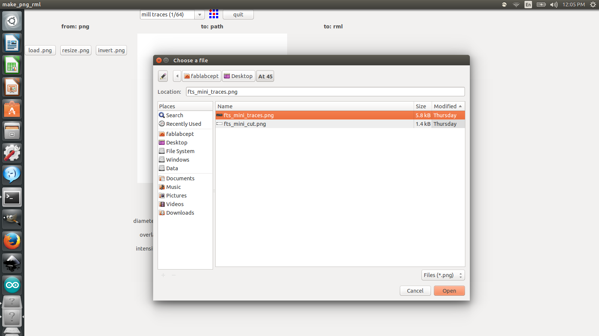
Choose the 1/64 drill bit. This drill bit is used for milling out the traces of the PCB Now click on "make path" and set the parameters given below:
- Diameter : 0.4 mm
- Offset : 3 mm
- Overlap : 0.5
- Error : 0 pixels
- Intensity : 0.5
- z(mm) : -0.08
Now adjust (Xmin, Ymin) for setting the drill bit on the PCB.
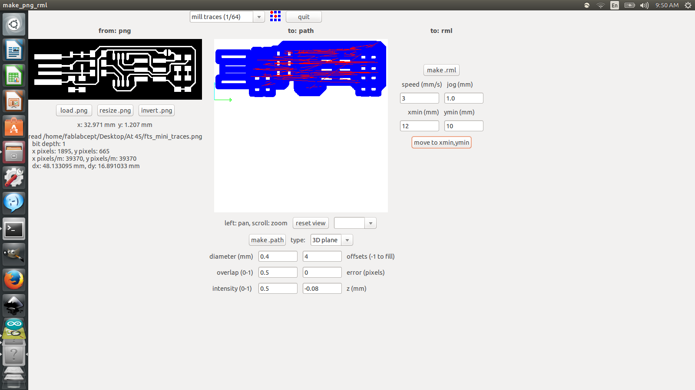
Now click on "make path" and then "make .rml", this open a new window which shows path for milling and proceed by clicking "begin milling". Incase you want to stop the milling you can click on "Abort".
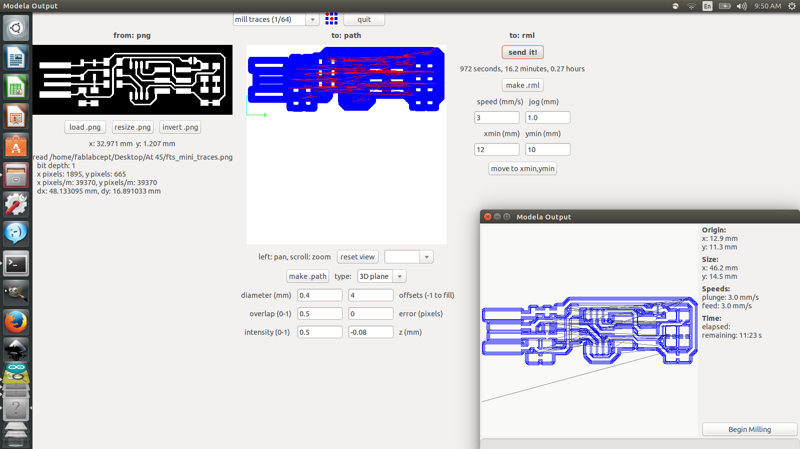
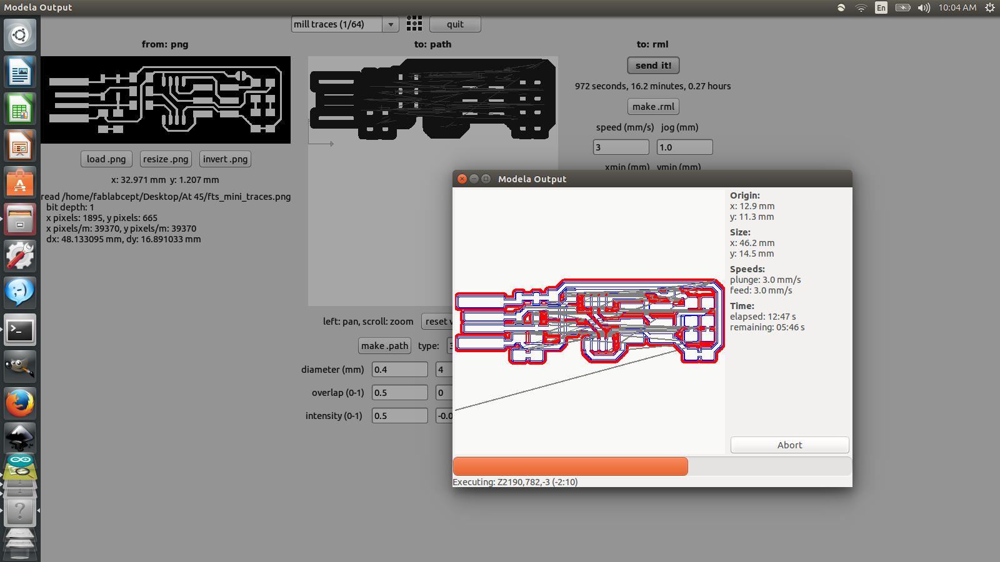
First we wnated to make traces so we used 1/64 drill bit. At first we broke the drill bit because of the high speed and wrong offset setting, the speed was 4 instead we had to keep it 3 and the offset was 3.5 which had to be 4. So because of this the PCB we were milling was not perfect.
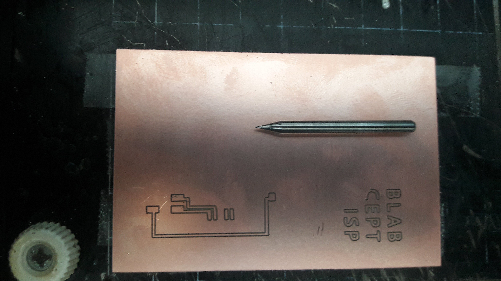
The other time PCB milled was perfect.

For cutting the PCB we used 1/16 drill bit. It was not in option so we used parameter of 1/16 drill bit. The changes we made in the parameters are as follows.
- Diameter : 0.04
- Overlap : 0.5
- Intensity : 0.5
- Offset : 4
- error : 0
- bot z(mm) : 1.3
- cut depth (mm) : 1.4
- Speed : 2
Here we want to cut the board so we used speed as 2 otherwise the drill bit may break. Now the board is ready

Soldering
Now we had to solder the components to the PCB. We used the following components for milling :
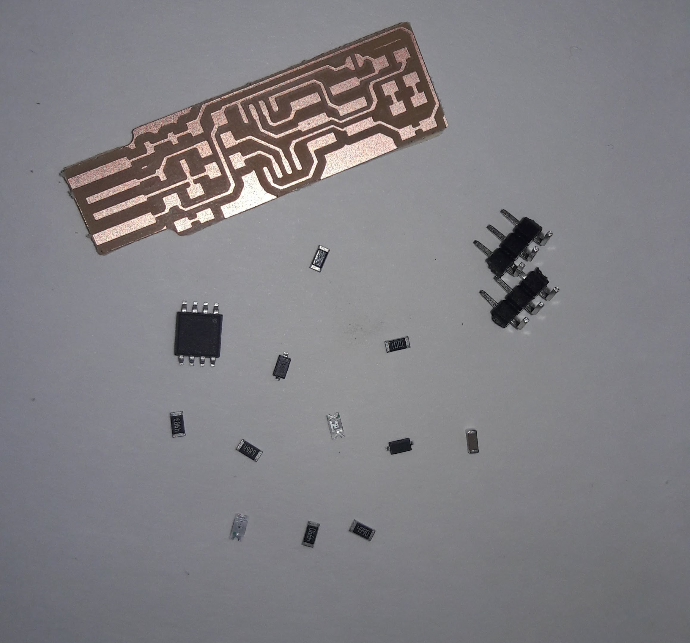
- ATtiny45
- Resistor - 1k ohm x2
- Resistor - 499 ohm x2
- Resistor - 49.9 ohm x2
- Zener Diode - 3.3V x2
- Capacitor - 100nF
- Red LED
- Green LED
- 2x3 Pin Header
Instruments used for soldering :

- Multimeter
- Soldering iron
- Soldering wire
- Liquid Flux
I took reference form the tutorial booklet provided by FABACADEMY for soldering the components.
Tutorial for ATtiny45
For making soldering easy I used liquid flux which helps in better connections of the components and proper bonding. After applying it gentally place the compomemt on the board and then solder it.

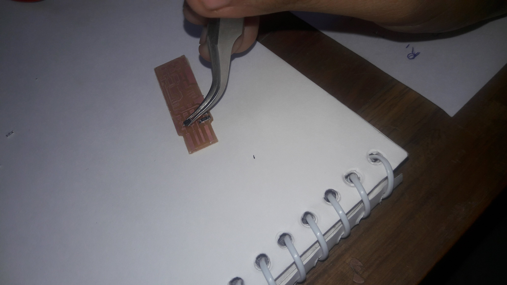
While soldering the fumes we get are irritable so when you sit for soldering blow some air so that the fumes doesn't come on your face directly. Finally the PCB is ready
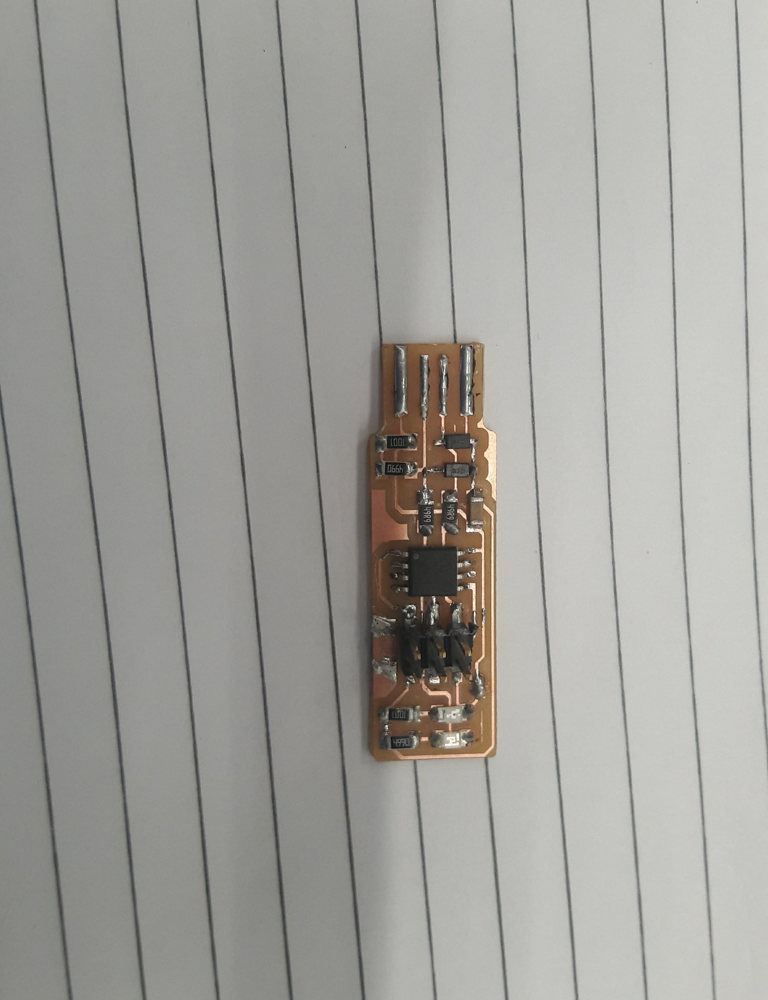
To check whether the soldering is done properly I used multimeter. Sometimes there is a short circuit in the PCB if the soldering is not done properly and sometimes the components get damaged because of soldering.

When the pcb is ready solder the jumper near ISP header(J1) to create a bridge. Also solder the usb contacts for brtter connection. While connnecting the PCB make sure that your laptop has USB 2.0 port and if you use other ports then sometimes it is possible that you may damage your USB Port or Mother board of your PC.
Next step is to check my PCB with AVRISP. It showed green colour which means that my PCB is proper and ready to be coded.
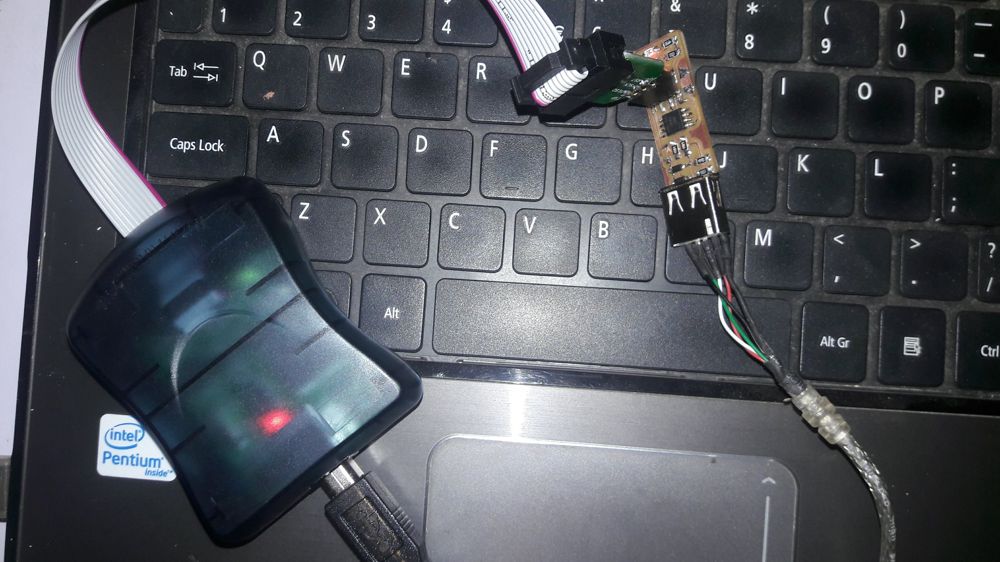 Check the connections with the help of multimeter. Sometimes the circuit won't work because any component can be shorted, so it is recomended to check the circuit with the help of multimeter.
Coding the PCB
I used Ubuntu Linux for coding my board. I followed the steps given in the tutorial for coding in Ubuntu Linux.
First of all open the terminal and type:
sudo apt-get install avrdude gcc-avr avr-libc make
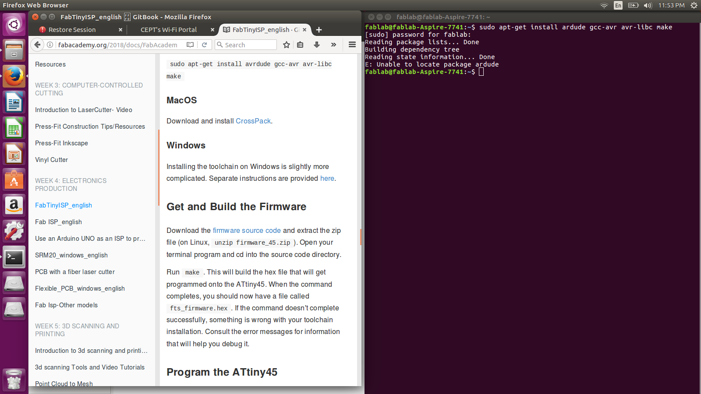
Download the firmware source code and extract unzip firmware_45.zip.
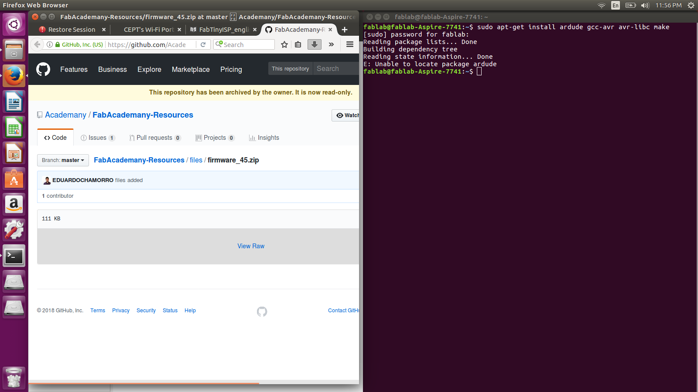
Go into the folder after by typing cd command and run make command. This command make a file called "fts_firmware.hex".

Update the Makefile and figure what avrdude calls your programmer. For ATtiny45 it will show "avrisp2"
Edit the makefile. On Linux you can do it with the help of gedit or nano makefile command.
Find the line:
PROGRAMMER ?= usbtiny
and change it to the programmer you are using. Here we need to change to "avrisp2"
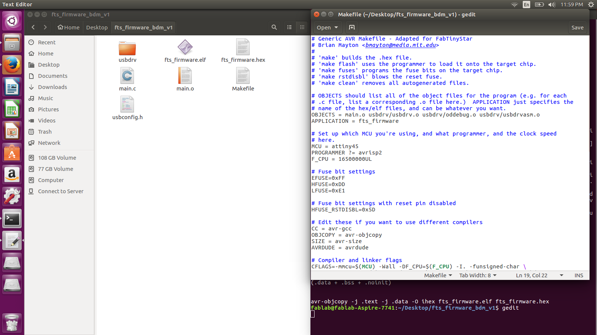
Plug your board in USB Port 2.0 and connect ISP header to your board
Run make flash. This command will erase the target chip and program it's flash memory with the contents of the (.hex) file you built before.
Run make fuses. This will set up all the fuses expect the one which disables the reset pin.
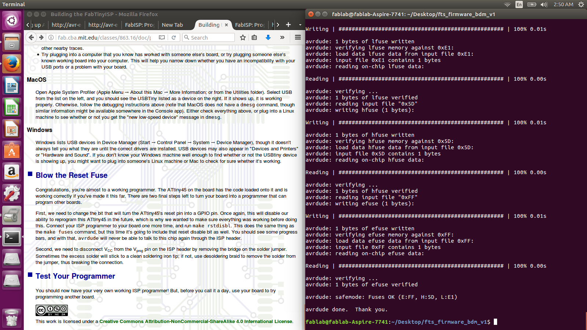
Unplug the board from the USB port and disconnect the programmer, then plug it back to the USB.
Type lsusbSee "Multiple Vendors USBtiny". Your work is completed if this command is detected.
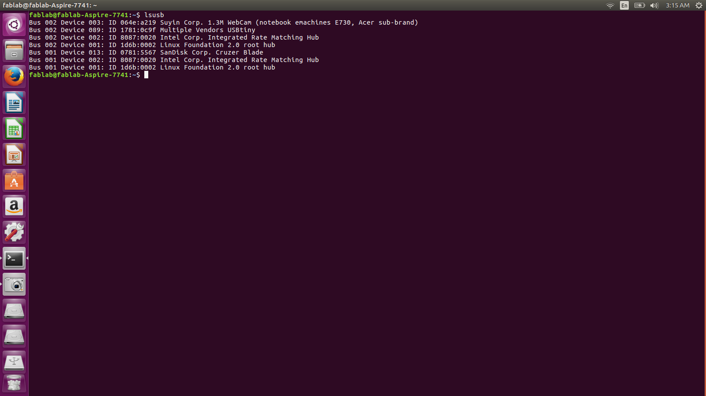
Now run rstdisbl. Now the pcb is fully programmed. While coding I faced problem in the rstdisbl step because I had desoldered the VCC and Vprog but got fixed when I joined the both of them.